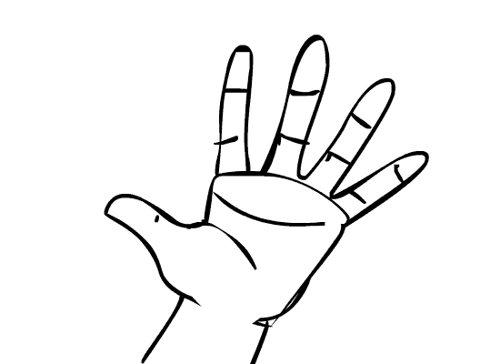

Purrinha
Descubra a arte de jogar "Purrinha" (também conhecida como "Porrinha" ou "Palitinho"), um jogo que se vale de pedaços de papel, moedas, feijões ou palitos quebrados. Este é um jogo para 3 ou mais pessoas. Nesta simulação, embarcaremos em uma partida com três participantes, sendo você um deles. Cada jogador inicia com três palitinhos em mãos e enfrenta o desafio de escolher a quantidade exata a esconder, tornando a experiência cheia de estratégia e suspense. Venha conhecer um dos jogos de boteco mais tradicionais do Brasil!
Regras:
Cada jogador escolhe o número de pedaços que vai usar, de zero a três, e quando nenhum palito é usado se chama lona. A roda gira no sentido horário e o primeiro a tentar adivinhar o número de palitos em jogo vira o último na rodada seguinte. Ganha aquele que acertar o total de palitos na rodada. No bar o último paga a conta.
Jogo:
-- Em desenvolvimento! --
